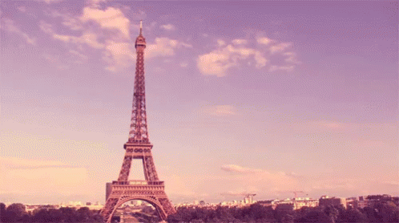

“Paris is a place where, for me, just walking down a street that I’ve never been down before is like going to a movie or something. Just wandering the city is entertainment.” — Wes Anderson
✨France...It's more than a country - the streets, the vibe, the landscapes...Everything about it just makes sense.Even it's language seems so majestic and elegant, although it's not the easiest language to learn(from experience), but once you know it, it's the coolest thing ever. Today we will be diving into this beautiful country, the places, the food, the music and hopefully after reading this article, you'll be able to see France for what is is. Enjoy!